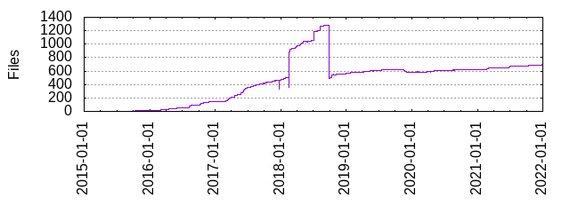

Files
- Total files
- 702
- Total lines
- 204479
- Average file size
- 9317.90 bytes

| Extension | Files (%) | Lines (%) | Lines/file |
|---|
| 17 (2.42%) | 252 (0.12%) | 14 |
| bazel | 115 (16.38%) | 5275 (2.58%) | 45 |
| bzl | 65 (9.26%) | 8882 (4.34%) | 136 |
| c | 27 (3.85%) | 176 (0.09%) | 6 |
| cc | 3 (0.43%) | 59 (0.03%) | 19 |
| cpp | 1 (0.14%) | 19 (0.01%) | 19 |
| go | 312 (44.44%) | 20682 (10.11%) | 66 |
| h | 9 (1.28%) | 41 (0.02%) | 4 |
| in | 4 (0.57%) | 61 (0.03%) | 15 |
| json | 4 (0.57%) | 86 (0.04%) | 21 |
| m | 3 (0.43%) | 53 (0.03%) | 17 |
| md | 10 (1.42%) | 845 (0.41%) | 84 |
| mm | 1 (0.14%) | 11 (0.01%) | 11 |
| patch | 12 (1.71%) | 161284 (78.88%) | 13440 |
| png | 1 (0.14%) | 24 (0.01%) | 24 |
| proto | 23 (3.28%) | 272 (0.13%) | 11 |
| py | 2 (0.28%) | 404 (0.20%) | 202 |
| rst | 52 (7.41%) | 5201 (2.54%) | 100 |
| s | 12 (1.71%) | 92 (0.04%) | 7 |
| sh | 9 (1.28%) | 146 (0.07%) | 16 |
| tpl | 1 (0.14%) | 13 (0.01%) | 13 |
| txt | 15 (2.14%) | 213 (0.10%) | 14 |
| vm | 1 (0.14%) | 37 (0.02%) | 37 |
| xml | 2 (0.28%) | 20 (0.01%) | 10 |
| yml | 1 (0.14%) | 345 (0.17%) | 345 |